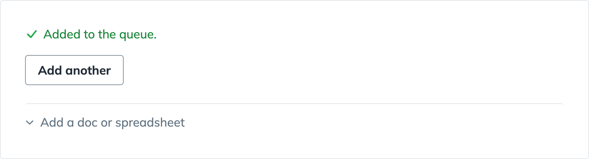
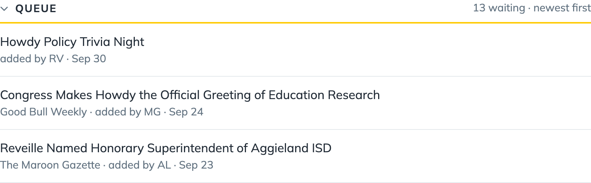
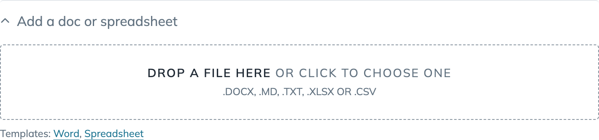
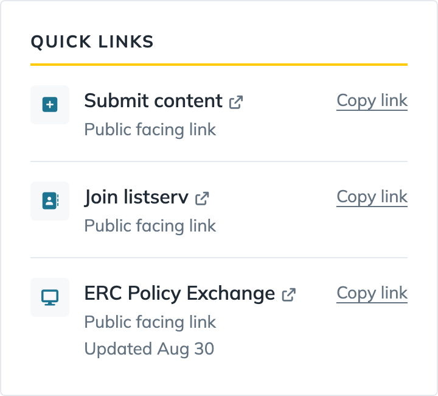

Submit content to the desk
Send in an event, a paper, an opportunity or a headline. Six slides, then a practice run.
Open Submit contentPress the right arrow, or click Next.
Fill in the form
- Paste the item's link.
- Pick a type, then its subtype.
- Put the date, time and place, or the deadline, in the Description.
- Add your initials, then click Add to the queue.
Claude is still working
After you click, Claude reads the link and fills in anything you left blank. The more you fill in, the better it does.
Your item shows in the Queue once Claude is done. Refresh if it isn't there yet.
Nothing goes public until Kate reviews it.


Which type
| ERC event | An event the ERC hosts or co-hosts. No subtype. |
| New research | A paper or report. Working Paper, Peer-Reviewed, Report, or ERC Research for the ERC's own. |
| Event | Anyone else's event. A&M for on campus, Off-Campus, or Webinar-Online. |
| Opportunity | Funding, a fellowship or a call. Funding & Grants, Fellowships & Programs, Call for Proposals, or Other. |
| Headline | A news story. National or Texas. |
Bulk upload
For a list from a scraper, a newsletter or your notes.
- Download the Word or spreadsheet template, under Add a doc or spreadsheet.
- Fill it in, one item per row. Or give an AI your list and the template, and ask it to fill the template.
- Drop the file on Add a doc or spreadsheet.
Claude reads the file and lists the items it found. Check them, then click Add all to the queue.
Only a title or a link is needed for each item.

Public links you can share
These are live and public. Under Quick links, click Copy link next to the one you need. Never send the desk's address.
- Submit content: for anyone outside the team to send us an item.
- Join listserv: to get the newsletter.
- ERC Policy Exchange: the public site with everything we publish.

Try it
This form saves nothing. Fill it in the way you would on Submit content.
Your practice queue
Nothing yetWhat you add shows here, the way it would in the Queue.